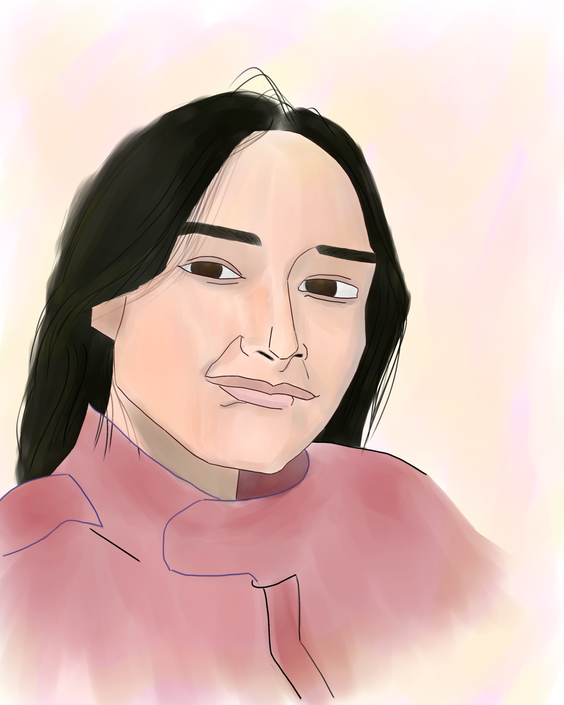

How it came about was unwitting Hazy but you had me conceding Beyond the sweeping and obscure plain I found something that felt unfeigned A companion through bliss and failings

Closer than my hands have been
Ilang araw na akong nakaupo dito, hindi ko pa rin magawang
magtipon ng kahit anong salita na maghahatid sa mga nararamdaman
ko. Walang segundo ang lumipas na nawala ka sa isip ko.
Simula paggising, ikaw ang unang hinahanap ko. Wala na akong paki
ano man mangyari sa araw ko basta't ikaw ang kasama ko sa huli.
Nagkaroon ako ng bagong pagpapahalaga dala ng paghanga ko sa bawat
wili, kaligayahan, at diwa na bumubuo sa pagkatao mo.
Sa pinakasimpleng salita, gusto kita. Simula August hawak hawak ko
na ang pakiramdam na 'to.
Sorry it took this long, hindi naging mabait ang oras
sa akin. Bukod pa dun, gusto kong ipadama sa'yo na kahit gaano
ka kagaling na artist, isa ka pa ring sagisag ng inspirasyon at
nararapat na maging muse. Kaya ginawa ko ang bawat piraso dito. Natagalan
lang dahil nag overcompensate ako. Kinain ako ng bawat detalye pero
'di ko pa rin magawang bigyan hustisya ang sining na dala mo.
Ilang beses akong umulit pero hanggang dito lang talaga ang kakayahan
ko.
The cake out in the rain
I hate this arrangement. I hate how I played it. Shel, kaya ako nahihirapan i express sarili ko kasi wala na ata talaga akong kayang ibigay at this point. Noong pinaplano ko pa to, kala ko kaya kong mag alay sa'yo hanggang mawalan ng bukas. Alam kong sobrang iba nito sa mga sinabi ko sa taas ng page, pero naging totoo lahat ng yun. Dinala ko lahat ng pakiramdam ko sa'yo. Ilang okasyon ang dumaan na naramdaman ko na tinataboy mo ako, kahit ito man o hindi ang gusto mo ipadama. Alam ko matagal na rin akong mabigat sa'yo, pero sa lahat ng instance na yun, nalilito lang ako. Maraming araw ang dumaan na parang nanglilimos lang ako sa tindig mo. Bawat kaway ko sa'yo, paalam agad sagot mo. Naalala ko pa yung listahan ng movies na papanoorin sana natin noong December. Nanghihinayang ako noon sa tuwing itatabi mo yung oras na yun para gamitin kay bogart. Yung portrait na binigay ko noong new year, marungis man ang pagkagawa, masakit pa rin na hindi mo na acknowledge. Nalaman ko pa na may crush ka palang napupukaw na makita. Alam ko masyadong baduy and it may seem minuscule, pero sobrang laki ng tama sakin nun at napalabuy-laboy nalang ako. Ngayon 'di na rin tayo masyado nag uusap. 'Di na rin ako sigurado kung paano kita lalapitan dahil natatakot ako.
Pinilit ko talaga hawakan lahat ng nararamdaman ko, bawat tuwa at ligaya. Hanggang dumating sa punto na napapatanong na ko sa sarili ko, kung matutuwa o masasabik pa rin ba ko sakaling tanggapin mo ako. Hindi ko na mahanap yung nararamdaman ko noon. Siguro sa ibang wani iba o higit pa ito sa isang confession. Gusto ko nalang ilapag lahat ng hindi ko nasabi. Alam kong unfair at maraya 'tong paraan na to, pero ayaw kong hintayin na parehas tayo maging multo ng walang kahit anong pagpipinid.